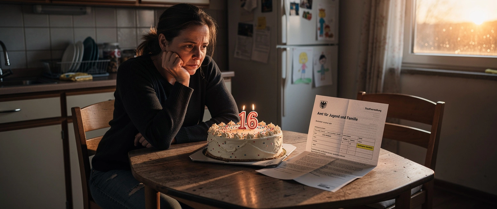

Herzlichen Glückwunsch zum 16.

Der Staat zahlt Kindern Unterhalt, wenn der Vater es nicht tut. 855.000 Kinder bekommen ihn, 3,2 Milliarden Euro waren es 2024. Zurückgeholt hat der Staat davon 545 Millionen. Das sind zwölf Prozent.
Gekürzt wird nicht bei den Vätern. Gekürzt wird bei den Kindern.
Familienministerin Karin Prien will den Vorschuss künftig nur noch bis zum 16. Geburtstag zahlen statt bis zum 18. Nach Zahlen ihres eigenen Hauses verlieren damit 110.000 Kinder den Anspruch. Etwa 30.000 haben Anspruch auf andere Leistungen. Bleiben 80.000, denen ersatzlos gestrichen wird. Der Bund spart dadurch 245 Millionen Euro.
Zwölf Prozent Rückholquote. 245 Millionen Ersparnis. Man muss kein Haushaltspolitiker sein, um zu sehen, wo mehr zu holen wäre.
Das sagt nicht die Opposition. Das sagt der Koalitionspartner. SPD-Fraktionschef Matthias Miersch: „Das Problem sind nicht die Kinder, das Problem sind Väter, die zahlen könnten und es nicht tun.“ Ein SPD-Abgeordneter nennt die niedrigen Rückholquoten im MDR „eine schreiende Ungerechtigkeit“. Nicht geändert wird übrigens die volle Anrechnung des Kindergelds auf den Vorschuss, die die tagesschau selbst „für Alleinerziehende nachteilig“ nennt.
245 Millionen. Zur Einordnung, was im selben Haushalt steht: Das Bürgergeld kostet inzwischen 46,9 Milliarden Euro im Jahr. Im Juni 2026 bezogen 185.579 ukrainische Staatsangehörige Leistungen nach dem SGB II. Knapp eine Million Ukrainer im erwerbsfähigen Alter leben in Deutschland.
Die Bundesagentur für Arbeit führt eine Tabelle, die selten zitiert wird. Beschäftigungsquote im Dezember 2025: ukrainische Männer 38,6 Prozent. Männer aus den acht wichtigsten Asylherkunftsländern: 63,6 Prozent. Vier Jahre nach Kriegsbeginn arbeitet der ukrainische Mann in Deutschland seltener als der Asylbewerber.
Dieselbe Behörde zählte im vergangenen Jahr über 110.000 Fälle von tatsächlichem oder mutmaßlichem Sozialleistungsbetrug und leitete 133.640 Ermittlungsverfahren ein. Erfasst sind dabei nur 300 der 404 Jobcenter. Die vollständige Zahl kennt niemand, weil sie niemand erhebt.
245 Millionen bei 80.000 Kindern. 46,9 Milliarden im Topf. Zwölf Prozent bei den Vätern. Über 110.000 Betrugsfälle in einer Statistik, die ein Viertel des Landes nicht abbildet.
Gespart wird da, wo niemand zurückschreibt.
Mehr dazu: Der Staat macht zu und Alles außer bessere Politik.